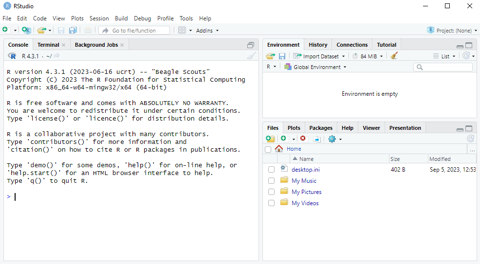

2 Getting Started
In this chapter we will briefly talk about what R and RStudio are, and how to install them on your computer.
2.1 What is R and what is RStudio?
R is a programming language which specializes in statistical computing and graphics.
RStudio, on the other hand, is a desktop application where you can write R code, execute R programs, and view plots created by R.
Thus R is the programming language itself, and RStudio is the desktop application you will use to write and execute R code.
2.1.1 What is a programming language?
Without getting into a complicated details, a programming language is a way to communicate to a computer via written text in a way that the computer can understand so that you can instruct it to do various operations for you. This is very different to how we usually interact with a computer, which often involves pointing and clicking on different buttons and menus with your mouse.
Knowing how to program is a very useful skill because you can automate repetitive tasks that would take you a very long time if you had to them “by hand” (i.e. by clicking things with your mouse). For example, suppose you work in a hotel in a city and you need to check how much your competitors are charging for rooms on different days so that you can adjust prices to stay competitive. Every day you have to go to all the different websites of the competing hotels and take note of the prices in an Excel sheet. With programming, what you could do instead is write code that tells the computer to automatically visit those websites every day, record the hotel room prices, and put them in an Excel sheet for you. This is a process called web scraping. This is just one example of the many ways programming languages can automate repetitive tasks.
When humans speak to each other and someone makes a grammar mistake, it usually isn’t a big deal. We usually know what they mean. But if you make a “syntax” mistake in a programming language, it won’t understand what you mean. The computer will either throw an error or, worse still, do something you didn’t want it to do. Therefore we need to be very careful when writing in a programming language.
2.1.2 Why learn R?
There are many different programming languages out there, and each have their different strengths and weaknesses. R is specialized in working with datasets, performing statistical analysis and visualizing data. These are very useful skills for entrepreneurs and startups, as data is becoming increasingly important to make business decisions.
R has many advantages over alternatives:
- R is free, open source and runs on all common operating systems. This means you can share your code with anyone and they will be able to run it, no matter what computer they are on or where they are in the world.
- There is a very large active community that creates packages to do a wide-range of operations, keeping R up to date with the latest developments. Excellent community help is also available at Stackoverflow.
- The R language is easier to learn than some similar alternatives. Programming languages also have a lot in common, so if you learn one it’s much easier to learn another one. With some R knowledge, it makes learning other languages, such as Python or Julia, much easier.
- RStudio is a great free integrated desktop environment to write and run R code.
- R is also extremely versatile in what it can do. For example, this online “book” and the accompanying slides were made entirely in RStudio!
More recently, employers (and especially tech startups) are increasingly looking for people with programming skills. Knowledge of R is therefore a great addition to your CV when you look for a job after your studies!
2.2 Installing R and RStudio
To get started, we need to install both R and RStudio. Install R first, then RStudio:
If you are on a university computer, R and RStudio will already be installed.
Below are OS-specific instructions.
2.2.1 Installation on Windows
- Go here, click on “Download R for Windows” and then click on the link for “base”. Then click on “Download R-X.Y.Z for Windows”, where X.Y.Z is the latest version number. Click on the downloaded
.exefile and follow the installation steps. - Go here and download the
.exefile listed next to the Windows OS. Click on the downloaded.exefile and follow the installation steps.
On Canvas you will find a video demonstration of me installing both R and RStudio on Windows.
2.2.2 Installation on MacOS
- Go here, click on “Download R for macOS”. If you have a newer Mac with an M1 or M2 processor, download the
.pkgfile with “arm64” in the name. For older Macs, download the “x86_64” one. Click on the file and follow the installation steps. - Go here and download the
.dmgfile listed next to macOS. Click on the downloaded.dmgfile and copy it to your applications.
If you have difficulties, there are many videos on YouTube demonstrating the installation of R and RStudio on a Mac.
2.2.3 Installation on Ubuntu/Debian
- To install R, run the following command in the command line:
sudo apt install r-base. - To install RStudio, first download the
.debfile from the RStudio website. Then in the command line, change to the directory containing the file and install it withsudo dpkg -i rstudio-*.deb.
2.3 Opening RStudio
After the installation, try opening RStudio on your computer. If prompted to choose a version of R, just choose the default option. After opening RStudio you should see something like:
 What we will do in the next chapter is learn some basic commands in R.